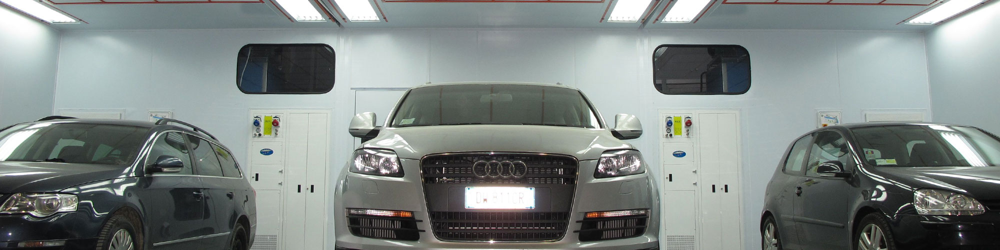
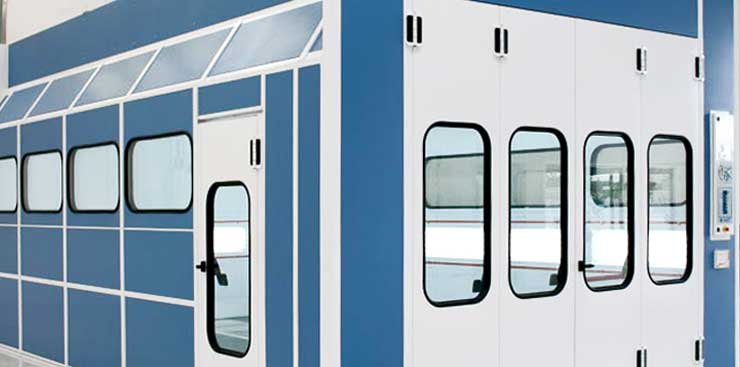
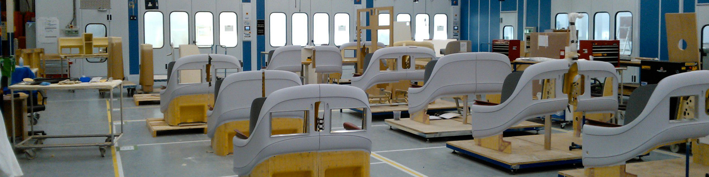

Die richtige Anlage für Ihre Arbeit.
Komplettlösungen, Neuanlagen, Modernisierung, Ergonomie und Gebrauchtes — passend zu Ihren Räumen und Ihrem Anspruch.
Alles aus einer Hand.
Wir planen, realisieren und nehmen Ihr Lackierunternehmen in Betrieb. Dazu gehören Lackierung, Heizung, Sanitär, Elektro sowie Drucklufterzeugung, -verteilung und -aufbereitung.
Auch bei Betonarbeiten, Farbmischräumen und Lagersystemen sind wir Ihr Ansprechpartner.

Neuanlagen für jede Größenordnung.
Als Generalimporteur des Lackieranlagenherstellers NOVA VERTA vertreiben wir kombinierte oder einzeln stehende Lackier- und Trocknungsanlagen für:
- Kleinteile, PKW und Kleinbusse
- Hochdach-Vans und Großfahrzeuge
- LKW, Omnibusse, Boote, Yachten und Flugzeuge
- Industrie und individuelle Anwendungen

Mehr Leistung. Weniger Reibung.
Wir rüsten Zu- und Abluftbaugruppen auf moderne Frequenzumformertechnik um, stellen die Beleuchtung auf LED um und ersetzen alte Öl- und Gasbrenner durch hocheffiziente Gasflächenbrenner.
Für ergonomisches Arbeiten bieten wir mobile und stationäre Fahrzeughebetechnik für Lackiervorbereitung und Kabine.

Stark starten. Klug investieren.
Für Sparfüchse und Newcomer haben wir interessante Gebrauchtanlagen und Einzelteile — als vollständige Lackierkabine oder als Baugruppen für Zu- und Abluft.
Verfügbarkeit anfragen